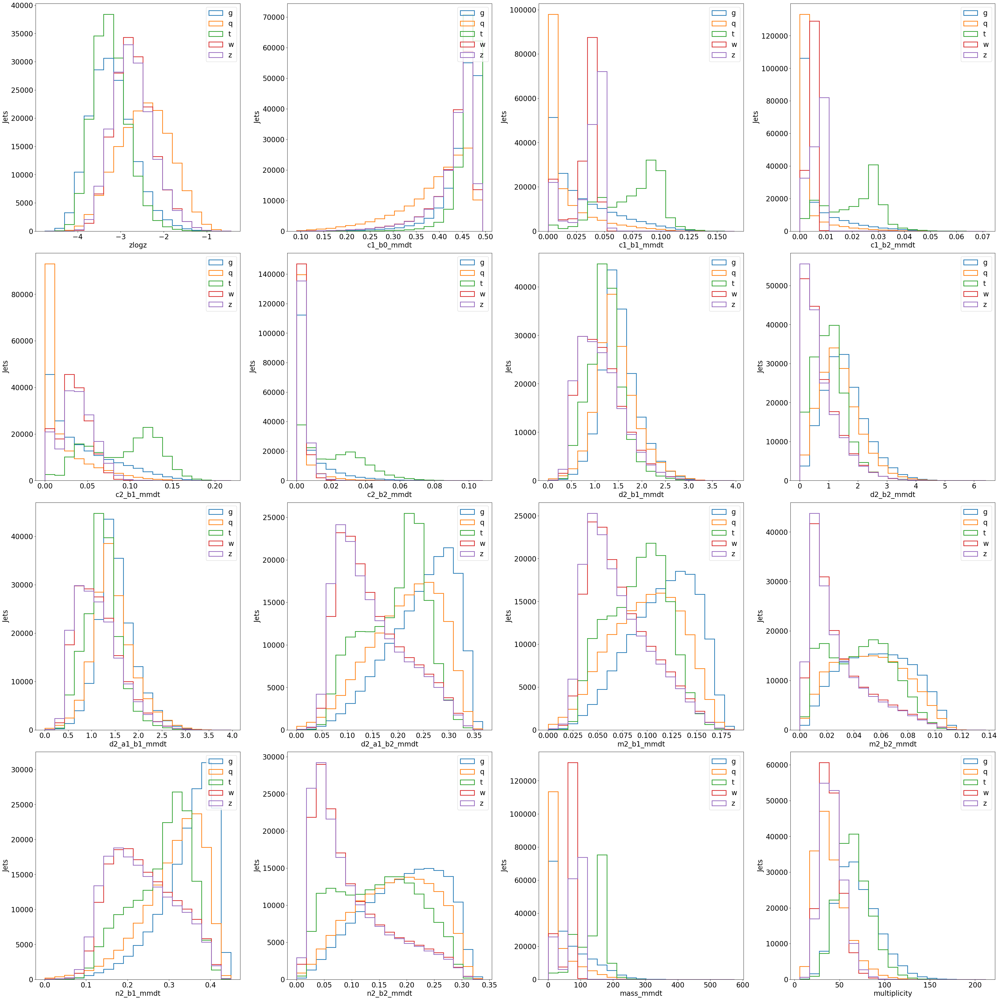
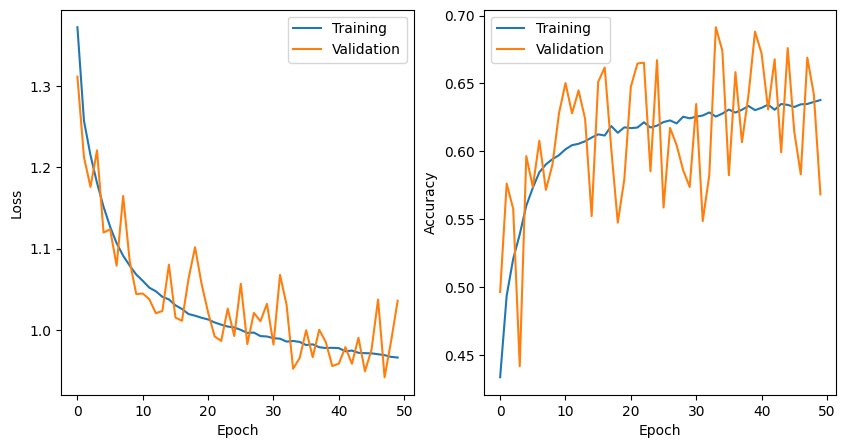
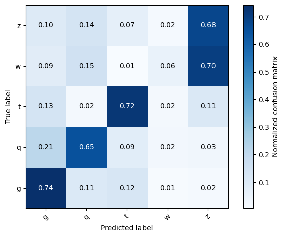
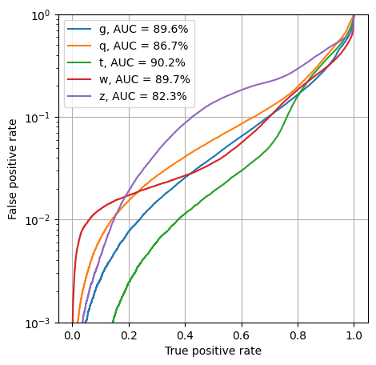

Tabular Data and NNs: Classifying Particle Jets
Contents
Tabular Data and NNs: Classifying Particle Jets#
from tensorflow.keras.utils import to_categorical
from sklearn.datasets import fetch_openml
from sklearn.model_selection import train_test_split
from sklearn.preprocessing import LabelEncoder, StandardScaler
import numpy as np
import tensorflow as tf
%matplotlib inline
seed = 42
np.random.seed(seed)
tf.random.set_seed(seed)
2023-01-10 18:58:48.399790: I tensorflow/core/platform/cpu_feature_guard.cc:193] This TensorFlow binary is optimized with oneAPI Deep Neural Network Library (oneDNN) to use the following CPU instructions in performance-critical operations: AVX2 AVX512F FMA
To enable them in other operations, rebuild TensorFlow with the appropriate compiler flags.
2023-01-10 18:58:48.533994: W tensorflow/compiler/xla/stream_executor/platform/default/dso_loader.cc:64] Could not load dynamic library 'libcudart.so.11.0'; dlerror: libcudart.so.11.0: cannot open shared object file: No such file or directory; LD_LIBRARY_PATH: /opt/hostedtoolcache/Python/3.9.16/x64/lib
2023-01-10 18:58:48.534014: I tensorflow/compiler/xla/stream_executor/cuda/cudart_stub.cc:29] Ignore above cudart dlerror if you do not have a GPU set up on your machine.
2023-01-10 18:58:49.269375: W tensorflow/compiler/xla/stream_executor/platform/default/dso_loader.cc:64] Could not load dynamic library 'libnvinfer.so.7'; dlerror: libnvinfer.so.7: cannot open shared object file: No such file or directory; LD_LIBRARY_PATH: /opt/hostedtoolcache/Python/3.9.16/x64/lib
2023-01-10 18:58:49.269455: W tensorflow/compiler/xla/stream_executor/platform/default/dso_loader.cc:64] Could not load dynamic library 'libnvinfer_plugin.so.7'; dlerror: libnvinfer_plugin.so.7: cannot open shared object file: No such file or directory; LD_LIBRARY_PATH: /opt/hostedtoolcache/Python/3.9.16/x64/lib
2023-01-10 18:58:49.269463: W tensorflow/compiler/tf2tensorrt/utils/py_utils.cc:38] TF-TRT Warning: Cannot dlopen some TensorRT libraries. If you would like to use Nvidia GPU with TensorRT, please make sure the missing libraries mentioned above are installed properly.
Fetch the jet tagging dataset from Open ML#
data = fetch_openml("hls4ml_lhc_jets_hlf", parser="auto")
X, y = data["data"], data["target"]
Let’s print some information about the dataset#
Print the feature names and the dataset shape
print(f"Feature names: {data['feature_names']}")
print(f"Target names: {y.dtype.categories.to_list()}")
print(f"Shapes: {X.shape}, {y.shape}")
print(f"Inputs: {X}")
print(f"Targets: {y}")
Feature names: ['zlogz', 'c1_b0_mmdt', 'c1_b1_mmdt', 'c1_b2_mmdt', 'c2_b1_mmdt', 'c2_b2_mmdt', 'd2_b1_mmdt', 'd2_b2_mmdt', 'd2_a1_b1_mmdt', 'd2_a1_b2_mmdt', 'm2_b1_mmdt', 'm2_b2_mmdt', 'n2_b1_mmdt', 'n2_b2_mmdt', 'mass_mmdt', 'multiplicity']
Target names: ['g', 'q', 't', 'w', 'z']
Shapes: (830000, 16), (830000,)
Inputs: zlogz c1_b0_mmdt c1_b1_mmdt c1_b2_mmdt c2_b1_mmdt c2_b2_mmdt \
0 -2.935125 0.383155 0.005126 0.000084 0.009070 0.000179
1 -1.927335 0.270699 0.001585 0.000011 0.003232 0.000029
2 -3.112147 0.458171 0.097914 0.028588 0.124278 0.038487
3 -2.666515 0.437068 0.049122 0.007978 0.047477 0.004802
4 -2.484843 0.428981 0.041786 0.006110 0.023066 0.001123
... ... ... ... ... ... ...
829995 -3.575320 0.473246 0.040693 0.005605 0.053711 0.004402
829996 -2.408292 0.429539 0.040022 0.005620 0.020352 0.000804
829997 -3.338864 0.467011 0.075235 0.017644 0.097954 0.022681
829998 -1.535967 0.335411 0.002537 0.000021 0.002692 0.000017
829999 -2.987995 0.455648 0.005218 0.000073 0.006994 0.000099
d2_b1_mmdt d2_b2_mmdt d2_a1_b1_mmdt d2_a1_b2_mmdt m2_b1_mmdt \
0 1.769445 2.123898 1.769445 0.308185 0.135687
1 2.038834 2.563099 2.038834 0.211886 0.063729
2 1.269254 1.346238 1.269254 0.246488 0.115636
3 0.966505 0.601864 0.966505 0.160756 0.082196
4 0.552002 0.183821 0.552002 0.084338 0.048006
... ... ... ... ... ...
829995 1.319914 0.785488 1.319914 0.211968 0.106151
829996 0.508506 0.143106 0.508506 0.077383 0.043065
829997 1.301970 1.285501 1.301970 0.236583 0.110919
829998 1.061160 0.797847 1.061160 0.175014 0.086063
829999 1.340265 1.357867 1.340265 0.305734 0.158129
m2_b2_mmdt n2_b1_mmdt n2_b2_mmdt mass_mmdt multiplicity
0 0.083278 0.412136 0.299058 8.926882 75.0
1 0.036310 0.310217 0.226661 3.886512 31.0
2 0.079094 0.357559 0.289220 162.144669 61.0
3 0.033311 0.238871 0.094516 91.258934 39.0
4 0.014450 0.141906 0.036665 79.725777 35.0
... ... ... ... ... ...
829995 0.037546 0.315867 0.123637 72.537308 71.0
829996 0.011398 0.131738 0.028787 77.263367 30.0
829997 0.068624 0.307230 0.183485 136.165955 72.0
829998 0.048476 0.271106 0.161818 4.660848 11.0
829999 0.092861 0.397832 0.257965 11.555076 42.0
[830000 rows x 16 columns]
Targets: 0 g
1 w
2 t
3 z
4 w
..
829995 z
829996 w
829997 t
829998 q
829999 g
Name: class, Length: 830000, dtype: category
Categories (5, object): ['g', 'q', 't', 'w', 'z']
As you see above, the y target is an array of strings, e.g. ["g", "w", ...] etc.
These correspond to different source particles for the jets.
You will notice that except for quark- and gluon-initiated jets ("g"), all other jets in the dataset have at least one “prong.”

Lets see what the jet variables look like#
Many of these variables are energy correlation functions \(N\), \(M\), \(C\), and \(D\) (1305.0007, 1609.07483). The others are the jet mass (computed with modified mass drop) \(m_\textrm{mMDT}\), \(\sum z\log z\) where the sum is over the particles in the jet and \(z\) is the fraction of jet momentum carried by a given particle, and the overall multiplicity of particles in the jet.
import matplotlib.pyplot as plt
fig, axs = plt.subplots(4, 4, figsize=(40, 40))
for ix, ax in enumerate(axs.reshape(-1)):
feat = data["feature_names"][ix]
bins = np.linspace(np.min(X[:][feat]), np.max(X[:][feat]), 20)
for c in y.dtype.categories:
ax.hist(X[y == c][feat], bins=bins, histtype="step", label=c, lw=2)
ax.set_xlabel(feat, fontsize=20)
ax.set_ylabel("Jets", fontsize=20)
ax.tick_params(axis="both", which="major", labelsize=20)
ax.legend(fontsize=20, loc="best")
plt.tight_layout()
plt.show()

Because the y target is an array of strings, e.g. ["g", "w", ...], we need to make this a “one-hot” encoding for the training.
Then, split the dataset into training and validation sets
le = LabelEncoder()
y_onehot = le.fit_transform(y)
y_onehot = to_categorical(y_onehot, 5)
X_train_val, X_test, y_train_val, y_test = train_test_split(X, y_onehot, test_size=0.2, random_state=42)
print(y[:5])
print(y_onehot[:5])
0 g
1 w
2 t
3 z
4 w
Name: class, dtype: category
Categories (5, object): ['g', 'q', 't', 'w', 'z']
[[1. 0. 0. 0. 0.]
[0. 0. 0. 1. 0.]
[0. 0. 1. 0. 0.]
[0. 0. 0. 0. 1.]
[0. 0. 0. 1. 0.]]
Now construct a simple neural network#
We’ll use 3 hidden layers with 64, then 32, then 32 neurons. Each layer will use relu activation.
Add an output layer with 5 neurons (one for each class), then finish with Softmax activation.
from tensorflow.keras.models import Sequential
from tensorflow.keras.layers import Dense, Activation, BatchNormalization
from tensorflow.keras.optimizers import Adam
from tensorflow.keras.regularizers import l1
model = Sequential(name="sequantial1")
model.add(Dense(64, input_shape=(16,), name="fc1"))
model.add(Activation(activation="relu", name="relu1"))
model.add(Dense(32, name="fc2"))
model.add(Activation(activation="relu", name="relu2"))
model.add(Dense(32, name="fc3"))
model.add(Activation(activation="relu", name="relu3"))
model.add(Dense(5, name="fc4"))
model.add(Activation(activation="softmax", name="softmax"))
model.summary()
Model: "sequantial1"
_________________________________________________________________
Layer (type) Output Shape Param #
=================================================================
fc1 (Dense) (None, 64) 1088
relu1 (Activation) (None, 64) 0
fc2 (Dense) (None, 32) 2080
relu2 (Activation) (None, 32) 0
fc3 (Dense) (None, 32) 1056
relu3 (Activation) (None, 32) 0
fc4 (Dense) (None, 5) 165
softmax (Activation) (None, 5) 0
=================================================================
Total params: 4,389
Trainable params: 4,389
Non-trainable params: 0
_________________________________________________________________
2023-01-10 18:59:38.693806: W tensorflow/compiler/xla/stream_executor/platform/default/dso_loader.cc:64] Could not load dynamic library 'libcuda.so.1'; dlerror: libcuda.so.1: cannot open shared object file: No such file or directory; LD_LIBRARY_PATH: /opt/hostedtoolcache/Python/3.9.16/x64/lib
2023-01-10 18:59:38.693830: W tensorflow/compiler/xla/stream_executor/cuda/cuda_driver.cc:265] failed call to cuInit: UNKNOWN ERROR (303)
2023-01-10 18:59:38.693849: I tensorflow/compiler/xla/stream_executor/cuda/cuda_diagnostics.cc:156] kernel driver does not appear to be running on this host (fv-az556-382): /proc/driver/nvidia/version does not exist
2023-01-10 18:59:38.694067: I tensorflow/core/platform/cpu_feature_guard.cc:193] This TensorFlow binary is optimized with oneAPI Deep Neural Network Library (oneDNN) to use the following CPU instructions in performance-critical operations: AVX2 AVX512F FMA
To enable them in other operations, rebuild TensorFlow with the appropriate compiler flags.
Train the model#
We’ll use SGD optimizer with categorical crossentropy loss. The model isn’t very complex, so this should just take a few minutes even on the CPU.
model.compile(optimizer="sgd", loss=["categorical_crossentropy"], metrics=["accuracy"])
history = model.fit(X_train_val, y_train_val, batch_size=1024, epochs=50, validation_split=0.25, shuffle=True, verbose=0)
from plotting import plot_model_history
plot_model_history(history)

Check performance#
Check the accuracy and make a ROC curve
from plotting import make_roc, plot_confusion_matrix
import matplotlib.pyplot as plt
from sklearn.metrics import accuracy_score, confusion_matrix
y_keras = model.predict(X_test, batch_size=1024, verbose=0)
print(f"Accuracy: {accuracy_score(np.argmax(y_test, axis=1), np.argmax(y_keras, axis=1))}")
Accuracy: 0.5680120481927711
plt.figure(figsize=(5, 5))
plot_confusion_matrix(y_test, y_keras, classes=le.classes_, normalize=True)
<Figure size 500x500 with 0 Axes>

plt.figure(figsize=(5, 5))
make_roc(y_test, y_keras, le.classes_)

Exercises#
Apply a standard scaler to the inputs. How does the performance of the model change?
scaler = StandardScaler()
X_train_val = scaler.fit_transform(X_train_val)
X_test = scaler.transform(X_test)
Apply L1 regularization. How does the performance of the model change? How do the distribution of the weight values change?
model.add(Dense(64, input_shape=(16,), name="fc1", kernel_regularizer=l1(0.01)))
How do the loss curves change if we use a smaller learning rate (say
1e-5) or a larger one (say0.1)?How does the loss curve change and the performance of the model change if we use Adam as the optimizer instead of SGD?